本系列文章是以CJ Taylor老师在coursera上的课程Robotics: Computational Motion Planning为参考，进行归纳整理。
Probabilistic Road Maps
介绍
之前，我们介绍了Cspace，还讨论了如何构造collision check function来检查Cspace中的某个点是否存在碰撞，从而判断这个点是否处于free space。我们还讨论了一个简单的规划方案，对Cspace进行采样，然后用collision check function来进行检查，将free space的各点连接起来形成一个图，从而进行路径规划。但是这个方法在Cspace是2D或3D时是可行的，对于更高维度的Cspace样本数量是巨大的。这里介绍另一种方法来减少采样量，它在Cspace中采样是随机的，而不是均匀的。
Probabilistic Road Maps过程
Probabilistic Road Map简称为PRM，它建立图的方法是：第一步我们在Cspace里随机产生一个点x，如果这个点在free space里，那么就用Dist Function找到离它较近的k个点，k是自己设定的；第二步试着连接x和这k个点并且用LocalPlaner进行判断这个线能否不经过障碍物连接起来，如果可以的话就形成了一条新的边；第三步重复第一步和第二步n次，n也是自己设定的。所以说这个方法需要自己设定图中点的数量以及每个点周围最多与几个点相连。结束了之后我们就在free space建立了一个图。下图说明了增加一个点的过程，增加的点为绿色，增加的线为绿色实线，无法增加的点为绿色虚线。
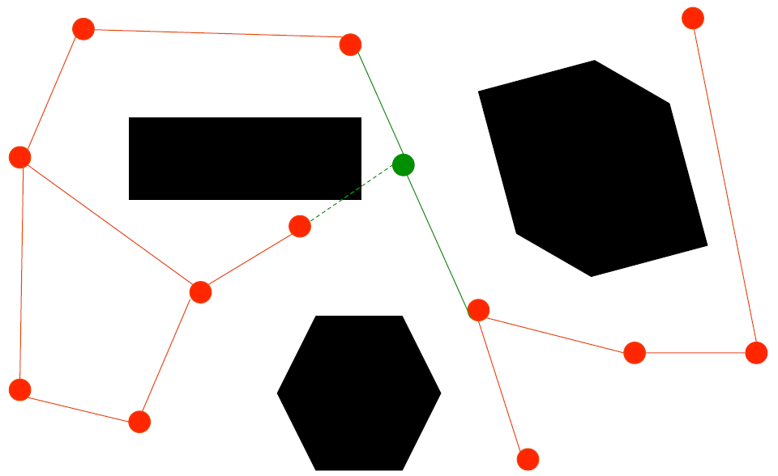
Probabilistic Road Maps Pseudocode
下图是PRM过程的pseudo code，最重要的就是要实现Dist function来测量Cspace中点和点之间的距离，以及LocalPlanner function来判断某个点能否和周围的点进行连接。
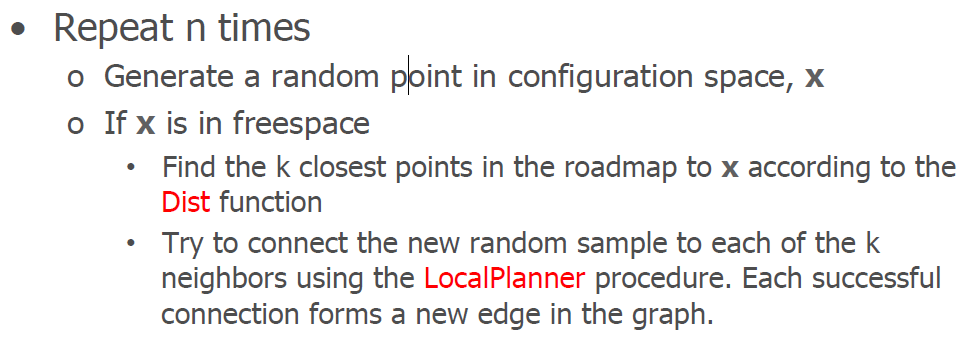
The Dist Function
Dist Funcition顾名思义就是点和点之间的距离，通常有这两种算法：
$$
\begin{aligned}
&Dist_1=\sum_i |x_i-y_i| \\
&Dist_2=\sqrt {\sum_i (x_i-y_i)^2} \\
&\text{其中，$x$和$y$是Cspace里的两个点。}
\end{aligned}
$$但是在很多例子中Cspace中的点代表的是转动角度，比如拥有转动关节的机械手臂，那么任意两点的角度距离就需要判断是正转近还是反转近，所有就有如下算法：
$$
Dist(\theta_1,\theta_2)=min(|\theta_1-\theta_2|,(360-|\theta_1-\theta_2|))
$$
The LocalPlaner Function
LocalPlaner是用来判断两点之间的线能否不经过障碍物连接起来，方法就是将这段直线均匀采样，再用collision check function来判断这个直线会不会经过障碍物。如下图所示的绿色点线，这条线上的绿点就是采样点，如果这些采样点中存在与障碍物的碰撞，这条线就不能连接，反之就可以连接。
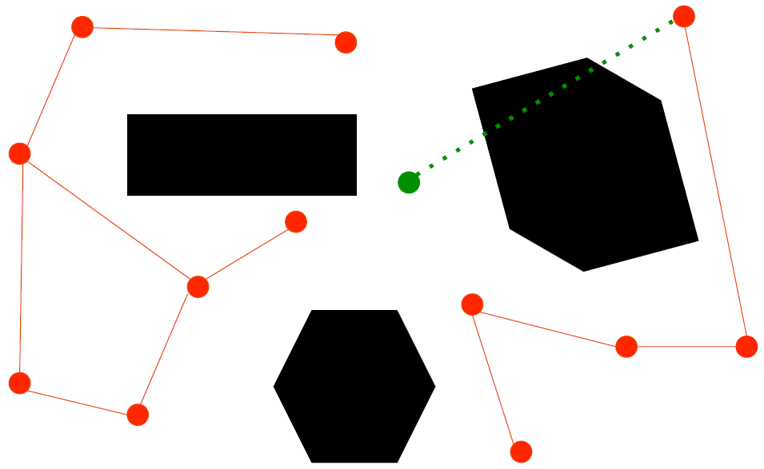
添加起始点和终点
现在我们用上述方法得到了一个roadmap如下图所示：
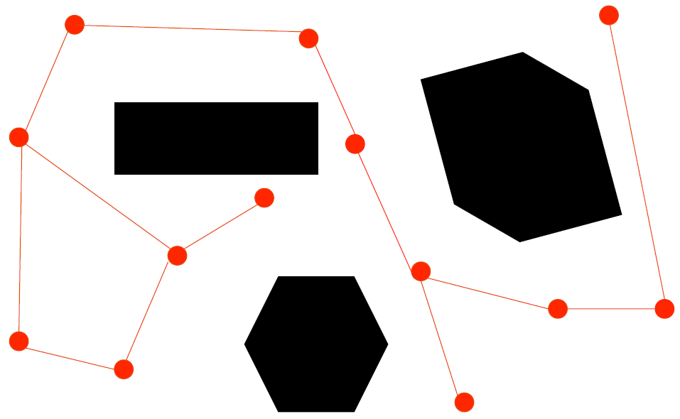
然后用同样得方法找到起始点和终点周围得点，并用LocalPlanner判断它们能否连接起来，如果可以的话就连接起来。
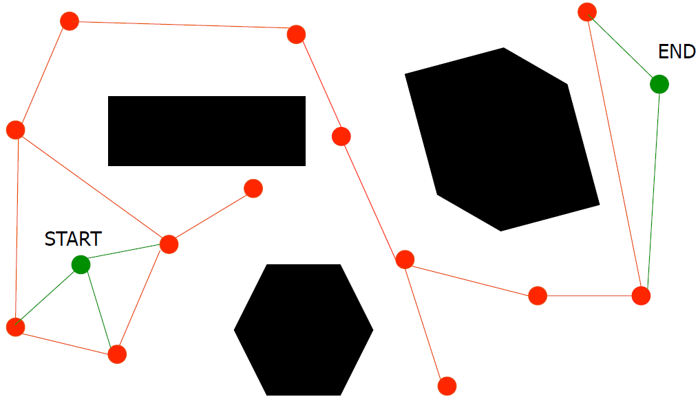
最后再用Dijkstra算法找到一条路径。
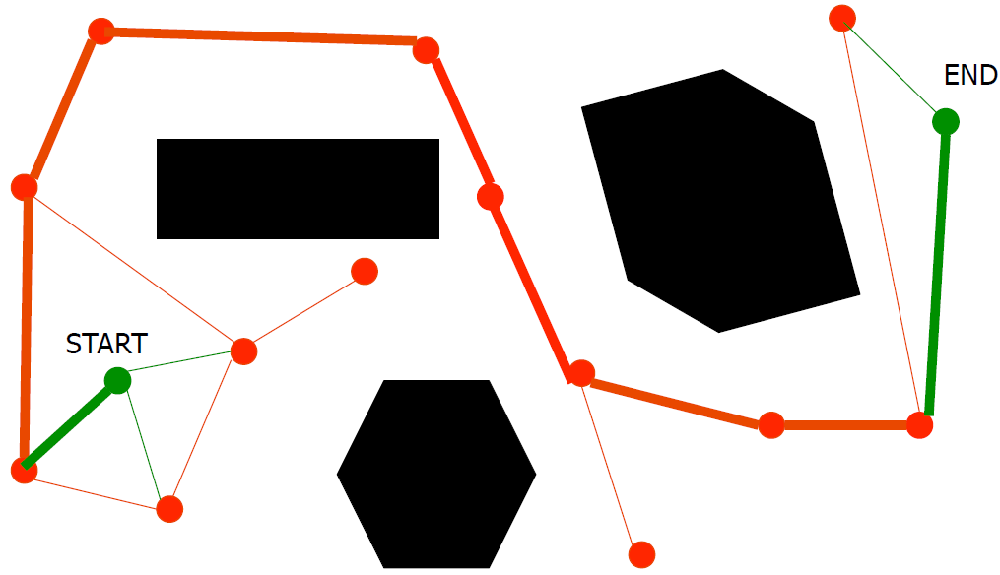
这种方法得一个优点就是，一旦roadmap建立好之后，我们就能反复使用这个roadmap，只需要改变起始点和终点就可以。
Sample Based Planners的特点
对于完备的路径算法来说，如果有路径存在它就能找到，反之则会反馈失败。但是对于PRM算法，有时即便存在路径，算法也不一定能找到，因为它是随机采样，那么采样点的多少以及位置就会影响最终的结果。考虑一下下图的情况，通过这个狭窄通道的路径是存在的，但是由于通道很小所以落在这里的点就很少，很难练成一条通路。
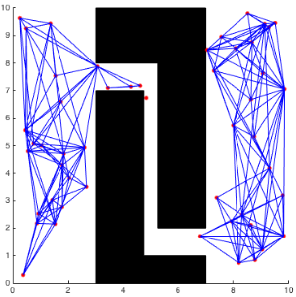
为了找到一条可行的路径，那么我们就要增加大量的采样点，增加了算法复杂度。而且由于样本点的随机性，产生的轨迹有时看起来很不平滑，所以通常人们会尝试一些方法让它的轨迹边缘变得平滑一些。
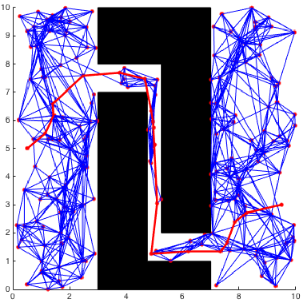
但是，如果该过程找不到路径，我们很难确定是确实没有路径还是说找的点不够多。因此，在实际应用中，采样点的数量是此过程的重要参数。为了解决上述问题，现在已经提出了很多能够让算法有目的的进行采样的方法，从而增加了在这些情况下找到路径的可能性。其中一种方法是在靠近障碍物附近多采样，从而构建出一条可以绕过障碍物的路径。其实应用PRM真正的优势在于它可以应用于高维的Cspace。
Rapidly Exploring Random Trees
PRM在第一阶段是在整个free space建立roadmap的，并未考虑任何一对特定的起点和终点，这种方式的优点就是可以反复使用这个roadmap对不同的起点和终点进行路径规划。但是有时候，我们可能只想要一次特定的规划，在这种情况下，在整个free space建立roadmap就很浪费时间。所以我们就提到了另一种方法，叫做Rapidly Exploring Random Trees，简称RRT，它可以用来规划特定的起始点和终点之间的路径。
RRT Procedure
RRT过程就是在Cspace中建立树的过程，第一步找到起始点作为树的root，第二步随机产生一个点x在Cspace中，如果这个点在free space则找到距离它最近的一个树中的点y，第三步判断x，y之间的距离是不是大于delta，如果大于delta则说明x距离y太远，那我们就在x到y的直线上找到一个点z，让z到y的距离小于delta，否则的话就直接用x这个点，第四步用LocalPlanner function判断x或者z到y点能否进行连接，如果可以则连接，否则放弃这个点。然后重复第二步到第四步n次，最后这个以起始点为root的树就建立好了。
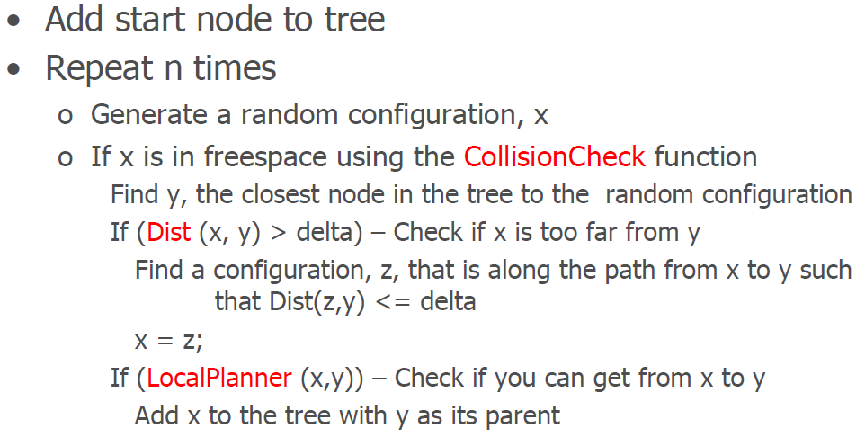
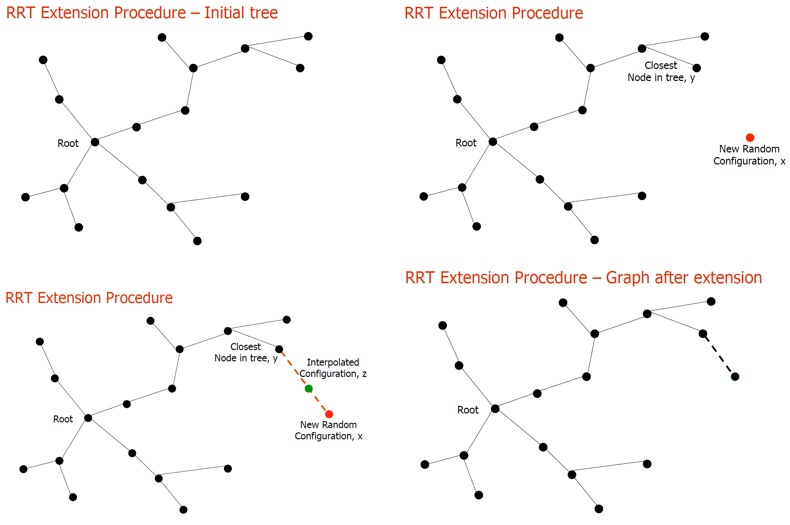
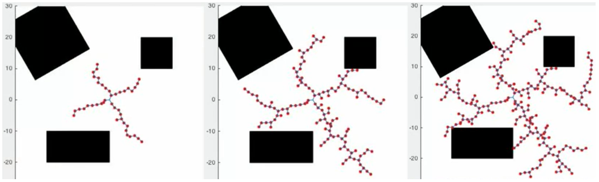
RRT 2 tree procedure
RRT 2 tree就是分别将起始点和终点作为两个树的root，然后交替延展各自的树，直到两个树之间可以连接起来。
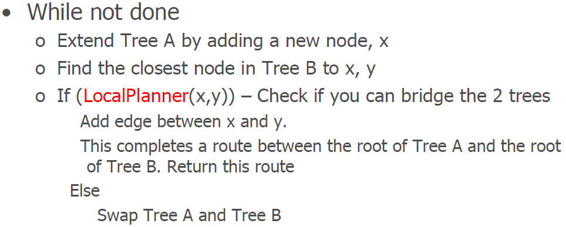
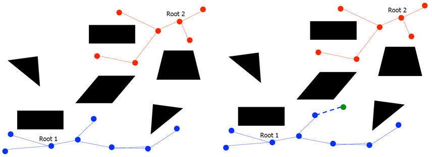
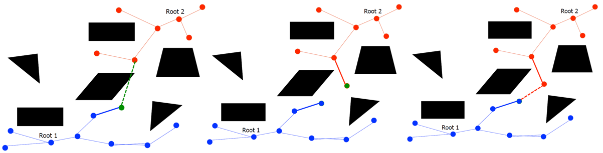